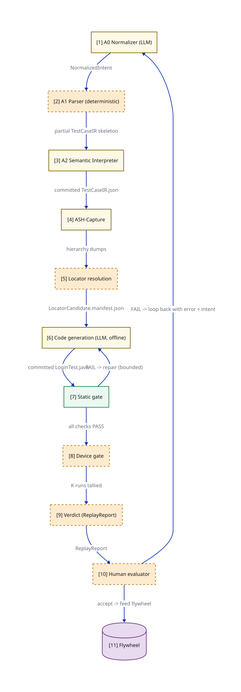
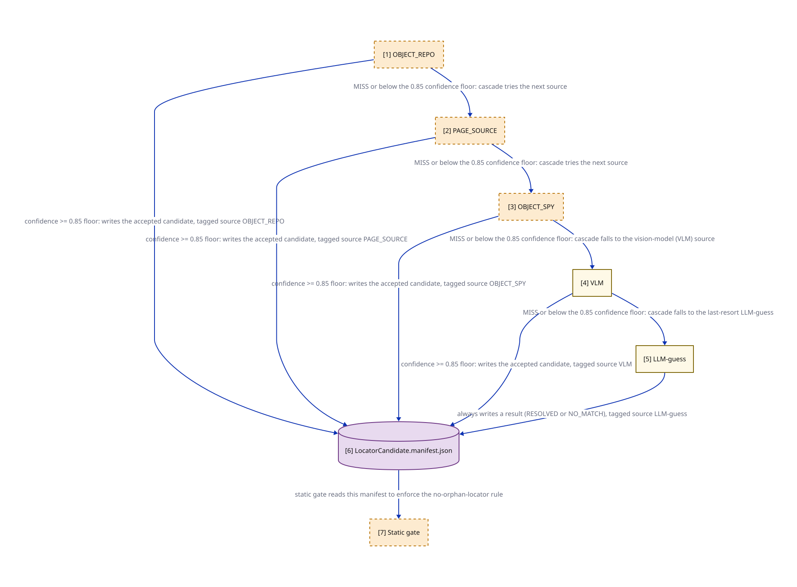
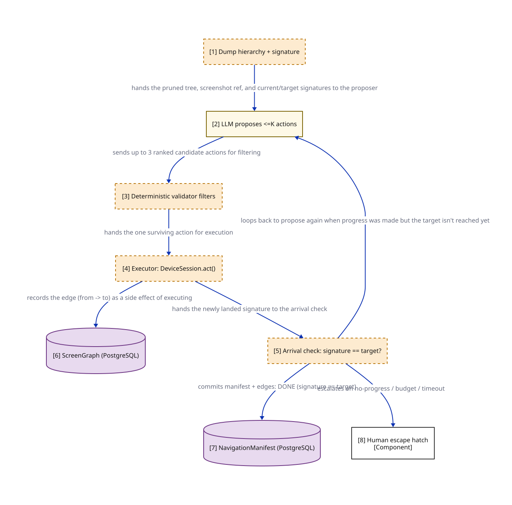

Engineering story · Mobile test automation
How a banking team let LLMs write its mobile UI tests — without ever letting one near the run that produces a verdict.
~10-minute read · August 2026
"Show me the executable that produced this verdict, and prove it hasn't changed."
That is the question a bank auditor asks about an automated test. Not "is your AI clever?" — but "what exactly ran, and can you show me the very bytes?" It sounds dry. It is also where most AI-powered test tools fall silent. If a model decided at runtime which button to tap, or quietly "healed" a failing step, there is no fixed executable to show. The thing that ran existed only for a moment, inside a model's response.
Teams still want LLMs in their test automation, for a good reason: writing and maintaining UI tests by hand is slow, dull, and endless. This is the story of a pipeline — internally called O1 — that tries to have it both ways: let LLMs do the tedious authoring work, and still hand the auditor a straight answer.
Before anyone wrote a line of this pipeline, six candidate architectures went through a weighted bake-off: the LLM-free spine (O1), a pure runtime interpreter, a hybrid, a vendor tool, a YAML-DSL approach, and Meta's regenerate-and-filter pattern. The scoring context was a bank shipping a monthly app release, so auditability got 20% of the weight and maintainability was elevated to 22%. Those scores are a draft for architecture-board sign-off, using the analyst's weights — not a settled ruling.
The first pass ended in a near-tie at the top: O6 at 75, O3 at 74, O1 and O5 at 73. O1 was maximally auditable but scored last-place marks on adaptability and on the cost of hand-maintaining static test code. Then the design evolved: a proposal (ADR 0014, still in flight) would automate the authoring side — intake, screen capture, drift repair. A Rev-2 re-grounding of the matrix, scored under the premise that ADR 0014 is accepted, moves O1 from 73 to roughly 88 — a clear lead, but one that exists only with that premise attached. The tie-breaker wasn't a better runtime. It was automating the part that writes the tests.
The trade-off every option lives on: adaptability against auditability. Faded dot = O1's original position. *The ≈88 score assumes ADR 0014 is accepted; it is currently a proposal. Scores from the six-way comparison — draft for ARB sign-off, analyst's weights.
Here is the whole idea, stated once. LLMs are allowed to author everything — the test's intermediate representation (a structured JSON description of what the test does), the locators (the technical addresses of on-screen elements), even the final Java code. But nothing an LLM produces can run until a human reviews it and commits it to git. The commit is the handoff. On the far side of that commit sits the replay spine: the machinery that actually executes tests on devices, and it contains no LLM at all. It reads committed files, runs them, and reports.
That one design move is what answers the auditor. Every verdict the spine produces pins the exact git commit of the code that ran — a field called codeCommit in the run report. "Show me the executable" becomes a one-line git command. "Prove it hasn't changed" is what a commit hash is. And because the spine never modifies a test mid-run (its report carries healsApplied: NONE), what ran is what was reviewed.
healsApplied: NONE)The commit firewall. AI can write anything on the left; only human-committed files cross to the right.
Abstractions are cheap, so follow one real test through. ACC-1042 — "Login with valid credentials shows welcome" — arrives as a raw export from Octane, the team's test-management tool, complete with headers, priority fields, and a note telling people not to run it against prod.
First stop is A0, a proposed intake normalizer Proposed · ADR 0014 whose only job is tidying words: strip the boilerplate, collapse "Sign in" / "log in" / "login" into one canonical phrasing, and carry credential references through untouched. It decides nothing about what the test means.
=== OCTANE TEST CASE ===
ID: ACC-1042
Title: Login with valid credentials shows welcome
1. Sign in to the app using the test credentials (username/password)"normalizedPhrasing": "sign in",
"phrasingVariantsAbsorbed": ["Sign in", "log in", "login"],
"screenContextHint": "LoginScreen"A0's (proposed) before and after, quoted from the mock artifacts. The messy export becomes a clean, structured intent — nothing more.
From there, two more stages do the real interpretation. A1, a deterministic parser, splits the intent into the right number of step slots without filling them. A2, the semantic interpreter, fills them in — "sign in" expands into five concrete tap-and-type actions, "verify the welcome banner" becomes a checkable assertion — and its output, TestCaseIR.json, is the first artifact committed to git.
Next the pipeline needs to know what is actually on the phone's screen. A capture tool dumps the live view hierarchy — every button and field with its technical identifiers — from three independent angles: the full raw dump, a pruned version small enough for a model to read, and the device cloud's own ranked locator suggestions. Locator resolution then matches each English phrase ("the username field") to a concrete locator, trying five sources in strict order, cheapest and most trustworthy first.
Code generation turns the IR plus locators into ordinary Appium Java (Appium being the standard tool for driving a real mobile app in tests). Two details matter here. The generated code never contains a password: credentials appear only as vault(...) calls, resolved at runtime from a secrets store that hands out short-lived, single-run tokens. And the generation runs offline, once per IR version — there is no model improvising during a test run. An engineer reviews LoginTest.java and commits it. That file is the audit pin.
Everything after the commit is the spine's territory: a static gate, a device gate, and a verdict — covered two sections down.
ACC-1042's nine stops. Amber-edged stops can involve an LLM; green stops are the LLM-free spine.

Count them: the entire pipeline invokes an LLM in exactly four places. One is part of the decided base design; the other three belong to the ADR 0014 proposal. Each call site has a guardrail that is not the model's own judgment — a deterministic check that sits between the model's suggestion and anything that happens in the real world.
When the deterministic locator sources can't clear a 0.85 confidence floor, a model proposes one — from the captured screen data only.
Guardrail: human accepts the proposal; the static gate then requires every locator to appear in a committed manifest.
For a screen the system has never seen, a model suggests up to 3 next taps to reach it.
Guardrail: a deterministic validator filters by confidence floor, an action denylist, and strict budgets; the model never touches the device. Open item: the signature re-keying defect (section 8).
A model suggests shortcut URLs to a screen, within a URL scheme parsed from the app binary — it never invents a scheme.
Guardrail: a deterministic probe confirms each route before it is kept. Open item: the probe's missing URL denylist (section 8).
When an app update breaks a known navigation path, discovery re-runs — scoped to just the broken stretch, reusing call site 2's prompt unchanged.
Guardrail: same validator and budgets as call site 2 — and it inherits that loop's re-keying defect.
The four LLM call sites. One decided, three proposed; every one is a proposer, never an executor.
The decided one deserves a closer look, because it shows the pattern in miniature. In one mock case, the test says "the Forgot Password link" but the actual element is typed as a button — a mismatch that drags every deterministic candidate below the confidence floor. The fallback model reads the captured screen data and answers:
From LocatorResolution.fallback.output.json
"proposedLocator": { "strategy": "ACCESSIBILITY_ID", "value": "forgotPasswordButton",
"confidence": 0.91, "source": "LLM-guess" }Note what it did not do: it did not tap anything, edit the test, or invent an element. It proposed, with a confidence score and a recorded reason, and a human decides whether the proposal enters the manifest. Every call site follows this proposer-not-executor shape.
Two more rules apply to all four sites. Every model call routes through a single gateway interface — no stage talks to a model vendor directly, so swapping or auditing models happens in one place. And every point where untrusted text enters a model, or model output re-enters the pipeline, is a named screening checkpoint under the project's injection-defense rules; the three proposed call sites cannot ship until their screening maps are written into ADR 0014.

Once LoginTest.java is committed, two gates stand between it and a verdict. The static gate runs in seconds, on no device at all: formatting, compilation, two lint tools, and a rule that every locator in the code must exist in the committed manifest — so an LLM can't smuggle in an address nobody vetted. Failures loop back to code generation, with a bound on retries. Cheap checks first means bad generations die before they cost a device minute.
The device gate runs the compiled test on real phones in the Perfecto cloud, K times. Today K=1 — a single run — is the signed-off baseline; moving to 3 or 5 runs (which would let the pipeline measure flakiness) is a later target, and raising K is itself a formally recorded decision. The result is a ReplayReport carrying the verdict, the evidence, and the pinned commit.
The report doesn't just sit in a database. Verdicts join a tamper-evident lineage chain — each record cryptographically linked to the one before it, so deleting or editing history is detectable — and the run evidence is anchored to immutable object storage. When the auditor asks the opening question, the answer is a chain of artifacts, not a person's recollection.
And then the part that surprises people: passing both gates does not certify the test. Machine PASS is a precondition. CERTIFIED is granted by a named human being, accountable for the decision — the pipeline's rules (a control called CF9) forbid issuing it mechanically. The machine gathers evidence; a person signs.
Self-healing — a runtime AI that notices a broken element reference and silently fixes it — is the headline feature of many commercial tools. O1's spine refuses it on purpose. A wrong heal doesn't make a test fail; it makes a test pass against a broken app. In banking, that false green is the catastrophic direction: a bug ships wearing a passing test as camouflage.
Practitioner audits report that ML element-match healing carries roughly 3× the false-pass rate of simpler fallback strategies, and that around 60% of teams disabled AI self-heal within three months — reported industry figures, not this project's measurements. When O1 breaks, it breaks loudly, and repair happens upstream where a human reviews the diff.
The economics still favor this design. Hand-maintaining a hundred-test suite under monthly releases costs on the order of $24k–36k a year in engineer hours; a regenerate-and-review model lands around $8k–14k, shifting the cost from engineer-hours to compute. Both figures are illustrative order-of-magnitude constants from the comparison analysis, not measured actuals — but the structural gap between "engineers hand-edit code" and "engineers review regenerated output" is what the whole authoring arm exists to capture.
One stage of the journey still needs a human babysitter: capturing screens. Someone has to steer the app to the right screen before the hierarchy tool can dump it. ASH-Capture — short for Automated State-aware Hierarchy capture — is the proposal to remove that person. It is not yet a decision; ADR 0014 is being drafted in a parallel thread, and everything in this section should be read with that badge attached.
The design keeps a map. Every screen the system has visited becomes a node in a committed ScreenGraph, with the taps that connect screens as edges. Most capture requests should then be boring: the target screen is already on the map, so the system replays the known route — no model involved. That warm path is targeted at roughly 90% of runs, a figure that is explicitly an unmeasured target, not a result. The cold path handles genuinely new screens: a discovery loop where a model proposes the next tap, a deterministic validator filters the proposals, and the survivor is executed — under hard budgets (at most 15 actions, a 10-minute session cap). When discovery fails, a human escape hatch takes over, targeted at under 10% of cases — also unmeasured.
Here is the discovery proposer thinking, from the mock run where it must find its way from the home screen to the account overview:
From ASHCapture.discovery.output.json
{ "rank": 1, "action": { "kind": "TAP", "locator": { "strategy": "ACCESSIBILITY_ID", "value": "accountsTab" } },
"confidence": 0.90,
"reasoning": "The 'Accounts' tab label directly matches the target screen 'AccountOverview'; ..." }A deep-link sub-loop rounds out the proposal: for screens reachable by shortcut URL, the model proposes routes inside the app's already-parsed URL scheme, and a deterministic probe confirms which ones actually land. Confirmed links become the fastest edges on the map.
The map also has to survive app updates. On each monthly release, every edge flips to "unverified" — nothing is rebuilt upfront. Re-verification happens lazily, the first time a screen is needed: an unchanged screen replays its known steps, its fingerprint matches, and the edge flips back to verified with no model call. A changed screen fails that match, gets marked broken, and triggers a scoped re-discovery from the last known-good screen — repairing one stretch of the map rather than rebuilding it. If ASH-Capture fell over entirely, the spine would keep running off existing captures and a human could always capture manually — the survivability guarantee behind the whole proposal.
Screen X is on the map with a verified route. Graph search picks the cheapest path, replays it, dumps the hierarchy.
Screen X is new or its route broke. Model proposes taps; validator filters; budgets bound the search. On failure: human escape hatch.
ASH-Capture's fork (proposed, ADR 0014). Both percentages are design targets awaiting measurement.

A pitch that hides its defects is a pitch, not an engineering document. Three problems in the ASH-Capture proposal are open, and the team publishes them deliberately — because a design you can trust with an audit is a design that audits itself first.
The signature re-keying defect. The discovery loop decides it has arrived by comparing the landed screen's signature — a structural fingerprint of the screen — against the signature stored from before. But if a screen legitimately changed in the new app release, which is precisely the situation drift repair exists to handle, the landed signature can never equal the stored one. The loop then deterministically burns its entire budget and dumps into the human escape hatch, every single time. Until a re-keying mechanism lets the stored signature be updated, the under-10% escape-hatch target fails at every release by construction. This is the load-bearing open question for the whole automatic-repair story.
The deep-link denylist gap. The validator that filters UI taps has a denylist — it refuses actions like logout, transfer, pay. The deep-link probe has no equivalent for URLs. A proposed route like erica://transfer?... could execute on the device and, if confirmed, persist as the preferred fastest edge on the map. Until a URL allow/deny list ships, the model's own reluctance to propose destructive-looking routes is the only line of defense.
Unmeasured coverage targets. The ~90% warm path, the <10% escape hatch, and the planning assumption that ~20% of screens change per release are all targets or assumptions awaiting a measurement spike. They are falsifiable claims — and the first one is already threatened by the re-keying defect above.
The comparison's verdict card names the production north-star: keep the spine as the substrate, and make the maintenance model regenerate-and-filter, never hand-maintain. That is the pattern Meta proved with TestGen-LLM, where 73% of filter-surviving candidates were accepted by engineers — a figure from unit-test improvement at Meta, not mobile-UI green-field work, so it travels as encouragement rather than a promise.
Chapter one — the spine — is decided and walked through end to end. ASH-Capture is chapter two, still a proposal waiting on ADR 0014. Assured generation at scale is chapter three. The auditor's question stays answered through all of them, because the answer was never a clever model. It was a commit.
Go deeper: the full pipeline walkthrough, the six-way comparison, the six lint-passing architecture diagrams, and the 22-file mock artifact folder that backs every stage of ACC-1042's journey with real data.
{kind=link}